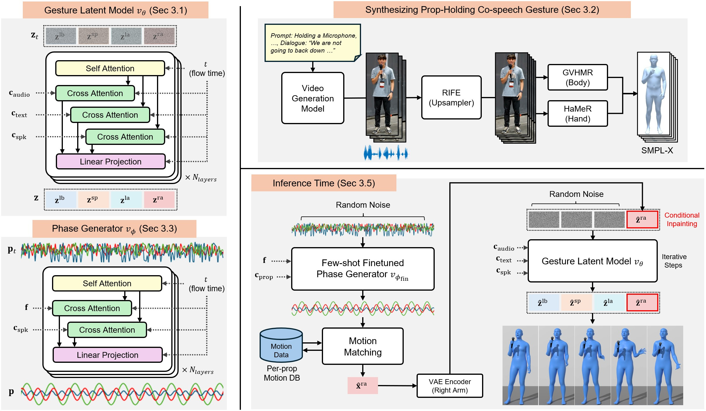

Computer Graphics Forum (Pacific Graphics 2026)
While co-speech gesture synthesis has made significant progress in generating natural full-body motion from speech, a frequent setting where characters hold objects while speaking remains largely underexplored. The core challenge is that motion capture data cannot be collected at scale for every possible object, making few-shot adaptation a practical necessity. Yet a handful of samples is hard to exploit: conditioning on them as motion examples imposes only a soft prior, yielding intermittent object-aware behavior, while fine-tuning the full model on them either overfits and loses gesture diversity or fails to produce stable, prop-appropriate motion on the holding arm. To address this, we present PropGesture, a few-shot framework that adapts to a target prop using a small set of example clips synthesized by a video generation model. Our key design is to localize object adaptation to the prop-holding arm, preserving gesture diversity while introducing object-specific dynamics locally. Specifically, a phase-based arm motion generator, pretrained on large-scale gesture data and fine-tuned on the example clips, resolves the many-to-many speech-gesture ambiguity through phase sampling and retrieves arm motion via motion matching. This arm motion is then inpainted into a pretrained gesture flow matching model that synthesizes the remaining body from speech. We demonstrate the effectiveness of our method through both perceptual and quantitative comparisons against motion-example-based and finetuning-based baselines.

We define a prop as any handheld object that, when grasped in one hand, constrains the co-speech gestures of that hand, and organize our ten objects into three categories by how the prop's function interacts with gestural freedom. Some props are shown held in the left hand: left-hand prop holding is obtained by mirroring the synthesized clips and repeating few-shot adaptation on the mirrored data.
All videos are muted by default. Click the speaker icon on any panel to hear its speech.
A microphone or mobile phone channels the speaker's voice and must remain near the mouth, tightly coupling the holding arm to the speaking act.
A hand fan, wine glass, dumbbell, briefcase or umbrella can be used while speaking, with the object's weight, grip, or periodic action shaping the motion envelope of the holding hand.
A handgun, sword or smoking pipe cannot be actively used while speaking, so co-speech gesture arises only in the non-use state, where the prop's weight and grip still shape the holding hand's motion.
We compare against two categories of baselines, corresponding to the two representative strategies for adapting a pretrained gesture model to a handheld prop. Motion-example-based methods (SynTalker, MECo) receive our synthesized prop-holding clips as motion exemplars. LoRA-fine-tuned methods (EMAGE, DiffSHEG, GestureLSM) receive the same supervision as PropGesture, with adapters fine-tuned per prop on motion extracted from those clips. None of them holds the prop on the arm at the frame level, so prop motion cannot be naturally sustained on the holding arm.
Ours‑DFT removes arm-localized adaptation and directly fine-tunes the full-body gesture latent model on the few-shot clips; Ours‑LoRA instead applies LoRA to that same model. Adapting the whole body at once forces the few prop clips to compete with the model's body-wide speech-gesture prior: Ours‑DFT overfits and collapses onto a few repetitive patterns, while Ours‑LoRA preserves diversity but cannot reshape the holding arm enough, leaving its prop-specific motion unstable.
Ours‑AM replaces the phase generator with motion matching driven directly by the nine acoustic features, leaving everything else unchanged. Unlike the motion-intrinsic phase, acoustic features carry no pose information, so acoustically similar frames may be kinematically distant. Retrieval then jumps between unrelated poses, producing abrupt transitions in the prop-holding arm.
The frozen flow matching model synthesizes the remaining body coherently with the inpainted arm, but that coherence does not enforce collision-free geometry. Our two-stage latent optimization corrects the right arm and then the left arm in noise space, resolving body-prop interpenetration while preserving the overall gesture.
@article{kang2026propgesture,
title = {PropGesture: Few-shot Co-speech Gesture Synthesis for Handheld Props},
author = {Kang, Jiho and Choi, Junghoon and Shin, Jihun and Lee, Sung-Hee},
journal = {Computer Graphics Forum},
volume = {45},
number = {7},
year = {2026},
note = {Pacific Graphics 2026},
}